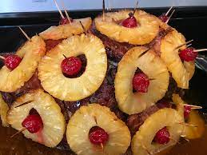

Tangy Honey Glazed Ham

Tangy Honey pineapple glazed ham
Ingredients
- 1 (10 pound) fully-cooked, bone-in ham
- 1 1/4 cups packed dark brown sugar
- 1/3 cup pineapple juice
- 1/3 cup honey
- 1/3 large orange, juiced and zested
- 2 tablespoons Dijon mustard
- 1/4 teaspoon ground cloves
Steps
- Preheat oven to 325 degrees F (165 degrees C). Place ham in a roasting pan.
- In a small saucepan, combine brown sugar, pineapple juice, honey, orange juice, orange zest, Dijon mustard, and ground cloves. Bring to a boil, reduce heat, and simmer for 5 to 10 minutes. Set aside.
- Bake ham in preheated oven uncovered for 2 hours. Remove ham from oven, and brush with glaze. Bake for an additional 30 to 45 minutes, brushing ham with glaze every 10 minutes.